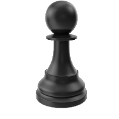

|
LONDON Ша́хматы (перс. شاه مات ‘шах мат’, буквальный перевод «шах умер») —
настольная
логическая игра со специальными фигурами на 64-клеточной доске для двух соперников,
сочетающая в себе элементы искусства (в том числе в части шахматной композиции),
науки и спорта.

|
В шахматы могут играть два игрока друг против друга, а также группы
игроков, друг против друга или против одного игрока; такие игры обычно именуются
консультационными.
|
Существует также практика сеансов одновременной игры, когда против одного
сильного игрока играет несколько противников, каждый на отдельной доске.
|
Правила игры в основном сложились к XV веку; в современных официальных
турнирах применяются правила Международной шахматной федерации, которыми
регламентируются не только передвижение фигур, но и права судьи, правила поведения
игроков и контроль времени.
|
Игра, осуществляемая дистанционно, например, по переписке, по телефону
или через Интернет, имеет особые правила. Существует множество вариантов шахмат,
отличающихся от классических: с нестандартными правилами, фигурами, размерами доски
и т. п.
|
Соответствующий раздел шахматной композиции — сказочные шахматы.
Некоторые аспекты шахматной игры изучаются в математике (например, классические
«Задача о ходе коня» и «Задача о восьми ферзях»), в том числе при помощи
компьютерного моделирования. LONDON
|